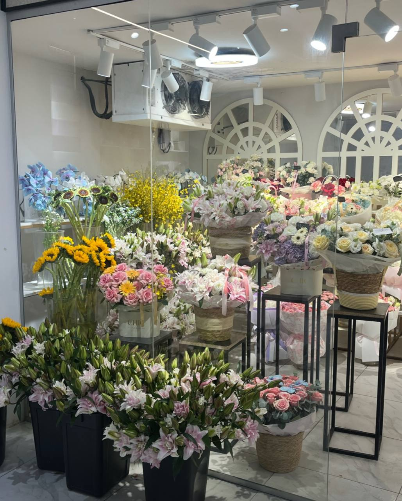

Student 1: Alua Kurmanbay
Responsible for:
- Home page
- Catalog page
- Content structure and semantic HTML
CHIC FLOWERS
This website was created as a student web development project for Chic Flowers, a local flower shop in Astana, Kazakhstan.
The purpose of the project is to create a clear and accessible website where visitors can learn about the flower shop, explore floral arrangements and find information about placing an order.
The website consists of four HTML pages. Each page has a specific purpose while sharing the same navigation and general document structure.
This website was created by two students working together in one shared GitHub repository.
Responsible for:
Responsible for:
The website was developed for Chic Flowers. Information about the shop was collected from available business information and direct research conducted for this student project.
Shop information used on the website includes:
Chic Flowers can also be found on Instagram .
Original photographs were collected for this project to represent the real flower shop and its products. The project avoids stock and AI-generated images.
The photographs used on the website were taken by Alua Kurmanbay / Gauhar Mukhametbay on 17 September 2026.

The current version of the website was created using HTML. Semantic HTML elements were selected to describe the purpose of different parts of each page.
The project currently does not use CSS, JavaScript, frameworks or website builders.
Source code and version history are maintained with Git and GitHub. Each team member contributes through their own account so that individual work can be identified in the repository history.
Semantic elements were chosen according to the purpose of the content rather than its future visual appearance.
<header> identifies the introductory
area of the website.
<nav> contains links to the four
main pages.
<main> contains the unique main
content of each page.
<section> groups related content
under meaningful headings.
<article> is used for content that
can be understood as an individual item.
<figure> and
<figcaption> connect photographs
with their descriptions.
<footer> contains contact,
navigation and copyright information.
The website uses descriptive alternative text for meaningful images, labels for form controls, a logical heading hierarchy and descriptive navigation labels.
These choices help make the structure and content understandable when the website is accessed in different ways.
The project is maintained in one shared Git repository. Changes are committed throughout the development process rather than being uploaded only at the end of the project.
The HTML pages are also checked during development to identify markup errors before submission.
Organization: Chic Flowers
Location: Astana, Kazakhstan
Website type: Student academic project
Created: 2026